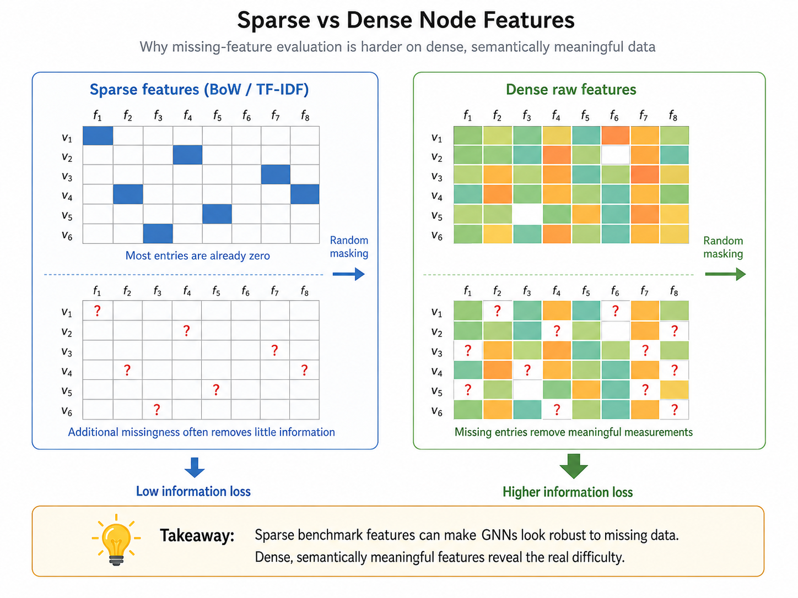
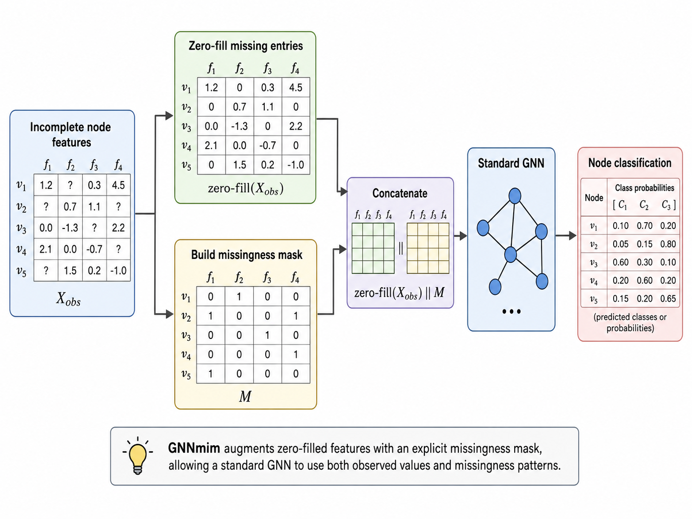
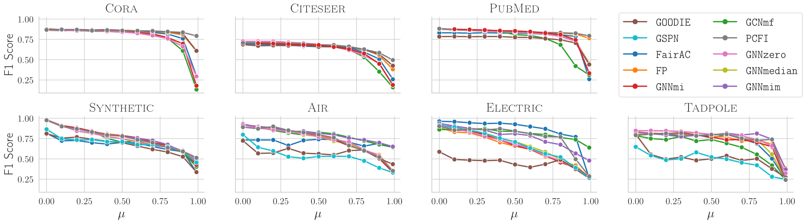
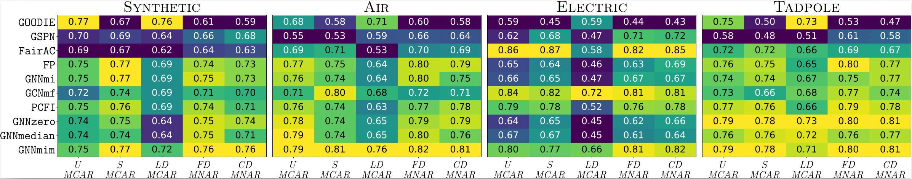
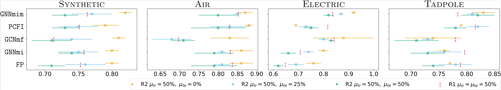

Why GNNs Look Robust to Missing Features — and Why They Often Aren’t
Missing node features are everywhere in real graph applications. But if we evaluate GNNs on extremely sparse citation-style benchmarks and only remove features uniformly at random, we may conclude that models are robust for the wrong reason.
The problem
Graph Neural Networks are increasingly used in domains where node attributes are incomplete: healthcare records, sensor networks, recommender systems, and many other settings where some measurements are unavailable, unreliable, or deliberately omitted. In this work, we study a specific but important question: how should GNNs behave when some node features are missing?
A common evaluation strategy is simple: take a standard node-classification benchmark, randomly delete part of the feature matrix, and compare methods. The problem is that many of these benchmarks were not designed for missing-feature evaluation. Datasets such as Cora, Citeseer, and Pubmed use high-dimensional bag-of-words features, where most entries are already zero. If almost everything is already zero, removing more entries may not actually remove much information.
This leads to the central message of the paper: many GNN methods look robust to missing node features because the evaluation setup is too forgiving. To understand robustness, we need better datasets, more realistic missingness mechanisms, and baselines that explicitly account for the missingness pattern.
Why sparse benchmarks can be misleading
Let $\mathbf{X}\in\mathbb{R}^{n\times d}$ be the node-feature matrix, $\mathbf{Y}$ the node labels, and $\mathbf{M}\in\{0,1\}^{n\times d}$ the missingness mask, where $M_{ij}=1$ means that feature $j$ of node $i$ is missing. The observed feature matrix can be represented as $\tilde{\mathbf{X}}$, where entries are either observed values or a missing symbol.
The paper formalizes feature sparsity as
$$ s(\mathbf{X}) = \frac{1}{nd}\sum_{i=1}^{n}\sum_{j=1}^{d}\mathbf{1}[X_{ij}=0]. $$
The key theoretical result studies the change in mutual information between labels and features after missingness is introduced:
$$ \Delta = I(\mathbf{Y};\tilde{\mathbf{X}}) - I(\mathbf{Y};\mathbf{X}). $$
Under label-MAR missingness, the information cannot increase: $\Delta\le 0$. More importantly, for binary sparse features under uniform MCAR missingness with probability $\mu$, the paper proves the bound
$$ -nd\mu\,h_2\!\left(\mathbb{E}[s(\mathbf{X})]\right) \le \Delta \le 0, $$
where $h_2$ is the binary entropy function. The intuition is straightforward: when features are extremely sparse, there is little information in individual nonzero entries, and randomly removing entries may barely change the information available to the model unless the missingness rate becomes extremely high.
This is exactly what happens in classic benchmarks. Cora and Citeseer have feature sparsity close to 99%, and Pubmed is also highly sparse. Under these conditions, many models maintain high F1 scores until more than 85–90% of entries are removed. That can look like robustness, but it is partly an artifact of the data representation.

Better data for studying missing node features
To evaluate missing-feature robustness more meaningfully, the paper introduces one synthetic dataset and three real-world datasets with dense, semantically meaningful node features.
The Synthetic dataset is built on a Barabási–Albert graph. Node features are sampled from a Gaussian distribution, and labels are generated by a fixed two-layer GCN applied to the complete features. This gives a controlled setting where the ground-truth function is expressible by a GNN.
The three real-world datasets are designed to reflect settings where missingness is realistic. Air is based on air-quality sensor measurements; Electric comes from an electrical-grid sensor setting; and Tadpole is a medical graph dataset derived from Alzheimer’s disease patient data. In all three cases, features correspond to raw measurable quantities rather than artificial high-dimensional sparse vectors or learned embeddings.
These datasets are not only denser. The paper also checks that features and graph structure are both useful and complementary, using the RINGS framework. This matters because a good missing-feature benchmark should not be solvable from structure alone, nor from trivial feature artifacts alone.
Beyond uniform random missingness
The second issue is the missingness mechanism. Many prior studies use U-MCAR, where each feature entry is removed independently with the same probability. This is useful as a clean baseline, but it is rarely the whole story in real applications.
The paper evaluates several mechanisms:
- U-MCAR: entries are missing independently with a uniform probability.
- S-MCAR: entire feature vectors of randomly selected nodes are masked.
- LD-MCAR: more label-informative feature columns are more likely to be missing, while individual missingness is still independent of the actual node value.
- FD-MNAR: missingness depends on the feature value itself, for example when extreme values are more likely to be absent.
- CD-MNAR: missingness depends on class-related feature conditions, mimicking settings where predictive values are selectively omitted.
This distinction is important. In healthcare, for example, a measurement may be missing because its value is abnormal, sensitive, or selectively reported. In sensor systems, missingness may be caused by device failures that correlate with environmental conditions. These are not well captured by uniform random deletion.
The paper also evaluates train–test shifts in missingness. For instance, training data may come from historical records with MNAR missingness, while test data may come from an automated system where missingness is absent or closer to MCAR. A model that performs well when train and test missingness are identical may fail under such a shift.
The proposed baseline: GNNmim
The paper proposes GNNmim, a simple GNN-based version of the Missing Indicator Method. Instead of trying to learn a sophisticated imputation model, GNNmim gives the model two pieces of information: the observed features, with missing entries filled by a placeholder value, and the binary mask that says which entries were missing.
For each node $i$, the input representation is
$$ \operatorname{zero\text{-}fill}(\mathbf{X}^{obs})_{i,:}\;\Vert\;\mathbf{M}_{i,:}, $$
where $\Vert$ denotes concatenation. The zero-filled values are not treated as meaningful imputations. They are placeholders; the mask tells the model when a value should be interpreted as missing.
This makes GNNmim deliberately lightweight. It does not assume that missingness is MAR, and it avoids the complexity of explicitly modeling the full feature distribution. The surprising result is that this simple strategy is highly competitive with more specialized methods across datasets, missingness mechanisms, and train–test shifts.

What the experiments show
The experiments compare GNNmim against several methods for incomplete node features, including zero, mean, and median imputation, feature propagation, confidence-based propagation, graph sum-product networks, Gaussian-mixture-based feature modeling, label-propagation-based methods, and attention-based recovery methods.
The first result is about datasets. On Cora, Citeseer, and Pubmed, performance remains stable until missingness becomes extremely high. On the proposed dense datasets, F1 scores drop much earlier. This confirms that the traditional sparse benchmarks can hide the actual difficulty of missing features.

The second result is about missingness mechanisms. Performance under uniform missingness is not a reliable predictor of performance under more realistic MNAR mechanisms. Some methods that perform well under one setting degrade sharply under another. GNNmim is among the most consistent methods across mechanisms.

The third result is about distribution shift. When models are trained under MNAR missingness and tested under a different missingness process, performance often drops even if the test-time missingness rate is lower. This shows that the type of missingness matters, not only the percentage of missing entries.

Main takeaways
The paper does not just propose another architecture for missing features. Its broader message is that evaluation itself needs to be rethought. If we test on sparse bag-of-words features and remove entries uniformly at random, we may overestimate robustness and underestimate the differences between methods.
A more meaningful evaluation should use dense, semantically interpretable features; multiple missingness mechanisms, including MNAR settings; and train–test shifts that reflect real deployment conditions. Under this more demanding setup, simple and principled methods can be very strong.
GNNmim is intentionally simple: concatenate the observed feature vector with the missingness mask and let a standard GNN learn from both. Once the evaluation artifacts are removed, this lightweight baseline becomes surprisingly competitive with more complex specialized architectures.
Key references
- Ferrini et al. Rethinking GNNs and Missing Features: Challenges, Evaluation and a Robust Solution. ICML 2026.
- Rubin (1976) introduced the classical missing-data framework and the MCAR, MAR, and MNAR terminology.
- Little and Rubin (2019) provide a standard statistical reference for missing-data analysis.
- You et al. (2020), Taguchi et al. (2021), Rossi et al. (2022), Guo et al. (2023), Um et al. (2023), Errica et al. (2024), and Yun et al. (2024) are representative references for GNN methods with incomplete node features.
- Van Buuren (2023) discusses missing-data methods including missing-indicator approaches in supervised learning.
- Bechler et al. (2025) and Coupette et al. (2025) discuss the need for more careful graph benchmark design.
- Zheng et al. (2015), Birchfield et al. (2016), Baek et al. (2023), and Zhu et al. (2019) are references for the real-world datasets used in the paper.
Source note
This page summarizes Rethinking GNNs and Missing Features: Challenges, Evaluation and a Robust Solution, a paper on evaluation protocols, datasets, and robust baselines for Graph Neural Networks with missing node features. The post is written as an accessible overview and omits technical proofs and full experimental tables; see the paper for formal statements, implementation details, and complete results.